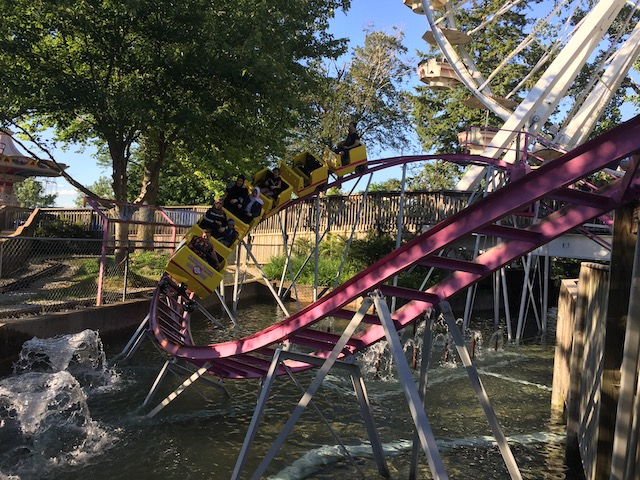
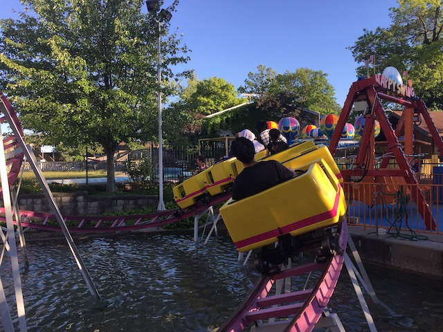

| |
Ravine Flyer 3 Review

We're here at Waldameer. Today, we're reviewing one of the many kiddy coasters at Waldameer. Ravine Flyer 3. Why did this come before Ravine Flyer II? I still don't know. But whatever. After you barley squeeze in the cars, you climb up the lift hill. Then you head down the curving first drop. It's a really nice first drop (For a kiddy coaster). Plus, it has a really nice setting over the water and near a fountain. Then you go over the first hill right over the pathway. I have to admit. That's a nice touch for a kiddy coaster of this variety. Well done Waldameer. This leads straight into the kiddy turnaround. We then head through a couple teeny little bunny hops before going back to the station and going again. Nothing special. Just a cookie cutter Miler ride. But you're a credit whore, and this gets the job done. Cha-Ching.
4/10
Location: Waldameer
Opened: 2000
Built by: Miler
Last Ridden: June 22, 2021
Ravine Flyer 3 Photos


Home
|